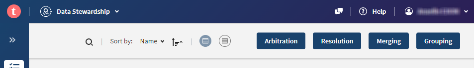
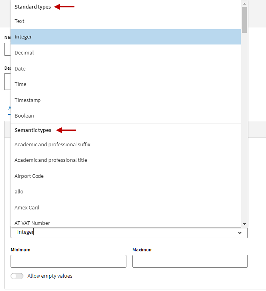
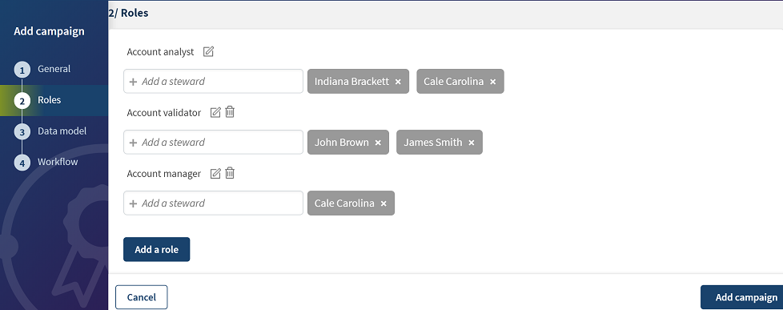

Talend Cloud Data Stewardship to aplikacja, za pomocą której możesz zarządzać zasobami danych. Organizuje interakcje na danych, ilekroć wymagana jest interwencja człowieka w celu współpracy przy przechowywaniu danych, arbitrażu lub walidacji.
Rozwiązanie to działa w oparciu o chmurę Talend, która zapewnia możliwości klasy korporacyjnej wraz z łącznością z dowolnym źródłem danych.
Podstawowe pojęcia Talend Cloud Data Stewardship to kampanie i zadania. Ma dwie predefiniowane role, a mianowicie: właścicieli kampanii i stewardów danych.
Kampania to główna jednostka pracy właścicieli kampanii. Zawiera wszystkie wymagane zasoby konfiguracyjne określone przez właściciela kampanii:
- Jakie są zadania o (struktura danych, ograniczenia walidacyjne itp.)?
- Co musi zrobić steward danych, aby rozwiązać zadania kampanii (typ zadania)?
- Którzy stewardowie danych pracują nad zadaniami kampanii (uczestnicy kampanii)?
- W jaki sposób stewardowie danych współpracują przy rozwiązywaniu zadań kampanii (przepływ pracy kampanii)?
Zadanie jest główną jednostką pracy stewardów danych. Zadanie należy do kampanii i jest przypisane do stewarda danych. Ma cykl życia, w którym przechodzi przez różne stany zgodnie z przepływem pracy zdefiniowanym w kampanii.
Kroki:
- Wybierz z listy rozwijanej aplikację Data Stewardship
- Zaakceptuj import przykładowej zawartości do tego modułu:
- Jeżeli powyższe okienko się nie pokaże po wejściu w aplikację, przejdź do pozycji "Guided tour" w menu swojego profilu użytkownika w prawym górnym rogu
Talend Cloud Data Stewardship posiada łatwy w użyciu interfejs, dzięki któremu interwencja w dane jest łatwiejsza niż kiedykolwiek.
Możesz skorzystać z przewodnika, który zapoznaje Cię z kluczowymi elementami i funkcjami aplikacji oraz daje możliwość importowania przykładowych treści, co pomoże Ci szybko rozpocząć pracę.
Procedura
- Zaloguj się jako właściciel kampanii lub jako administrator danych.
Opcje dostępne na stronie głównej zależą od Twojej roli i tego, czy posiadasz licencję na Platformę obejmującą jakość danych.
Strona Kampanie lub Zadania zawiera listę wszystkich kampanii, których jesteś częścią.
Ikony znajdujące się obok nazwy każdej kampanii zapewniają właścicielom kampanii szybki dostęp do ważnych opcji zarządzania, w tym edycji, kopiowania, eksportowania i monitorowania kampanii.
- Na liście kampanii kliknij nazwę kampanii, którą chcesz otworzyć.
Z pasków na górze strony Kampanie możesz wyświetlić więcej informacji o otwartej kampanii i jej zadaniach. Możesz wchodzić w interakcję z treścią, aby nawigować i uzyskiwać dostęp do innych stron, do których masz dostęp zgodnie z przypisaną Ci rolą.
- Na górnym pasku:
- Kliknij Data Stewardship i wybierz aplikację, do której chcesz się przełączyć z listy dostępnych aplikacji, lub kliknij ikonę po lewej stronie, aby wrócić do strony głównej środowiska chmurowego.
- Kliknij opcję Pomoc, aby otworzyć dokumentację online.
- Kliknij nazwę logowania i skorzystaj z otwartej listy, aby:
- Otwórz prezentację z przewodnikiem, która zawiera wskazówki dotyczące kluczowych elementów i funkcji aplikacji, a także importuje przykładowe treści, które pomogą Ci szybko rozpocząć pracę.
- Uzyskaj dostęp do stron wsparcia Talend i społeczności.
- Skonfiguruj preferencje profilu użytkownika, w których możesz edytować swoje dane osobowe, skonfigurować preferencje dotyczące języka i regionu oraz zmienić hasło.
- Wyloguj się i zaloguj ponownie do Talend Cloud Data Stewardship.
- 
- Na pasku menu:
- Kliknij nazwę kampanii, aby wyświetlić więcej informacji o kampanii.
- Użyj listy Stan, aby uzyskać dostęp do zadań znajdujących się w różnych stanach przejściowych w kampanii.
Dostępne stany różnią się w zależności od stanów zdefiniowanych w przebiegu kampanii i Twoich praw dostępu.
- Jeśli otworzysz kampanię jako administrator danych, użyj listy po lewej stronie, aby przełączać się pomiędzy przydzielonymi Ci zadaniami a nowymi zadaniami w bieżącej kampanii.
Z nowej listy zadań możesz przypisywać zadania innym administratorom danych w ramach tej samej kampanii.
- Kliknij strzałki Cofnij i Ponów, aby cofnąć lub powtórzyć ostatnią akcję wykonaną na liście zadań w bieżącej sesji.
Jednym z rozwiązań dostarczanych przez Talend Cloud Data Stewardship jest dopasowywanie, oczyszczanie i mastering danych za pomocą kampanii Merging.
Ten przypadek użycia opisuje, w jaki sposób można dopasowywać i oczyszczać dane pochodzące z różnych źródeł w celu tworzenia rekordów głównych.
Załóżmy, że masz problemy z jakością danych i anomaliami w danych klientów. Znalazłeś zduplikowane informacje o potencjalnych klientach ze względu na brak synchronizacji pomiędzy różnymi systemami CRM używanymi w Twojej firmie. Kampania łączenia umożliwia rozwiązywanie duplikatów poprzez zachowanie tylko odpowiednich danych.
Należy jednak wziąć pod uwagę dwa aspekty:
- Jak zidentyfikować grupy dopasowań, które grupują razem potencjalnie zduplikowane rekordy? Ten problem można rozwiązać, używając zadania Talend w Talend Studio.
- Jak wybrać najlepsze wartości atrybutów ze źródeł danych i przedstawić najdokładniejsze i najbardziej wiarygodne rekordy główne dotyczące zużycia przez użytkowników i systemy? Ten problem został rozwiązany poprzez użycie kampanii łączenia w Talend Data Stewardship.
Aby odtworzyć przykład i użyć dokładnych danych klienta, zakładamy, że właściciel kampanii pobrał plik wejściowy i zadanie Talend użyte w tym przykładzie. Można ich używać do ładowania zadań w kampanii po jej utworzeniu.
Utwórz kampanię łączenia, aby rozwiązać problemy z jakością danych i anomaliami w danych klientów pochodzących z różnych źródeł. Kampania ta określa strukturę danych, którymi należy zarządzać, działania, jakie należy podjąć na danych oraz jakich administratorów danych ma pracować nad jakimi zadaniami.
Możesz ustawić uprawnienia dla każdego atrybutu i dla każdego stewarda danych, aby określić, kto może przeglądać lub edytować które atrybuty. Możesz także zdecydować, w jaki sposób uczestnicy kampanii będą współpracować przy rozwiązywaniu zadań kampanii. Kampania może być własnością jednego lub kilku właścicieli kampanii.
Zanim zaczniesz
- Administrator utworzył użytkowników zarządzających i przypisał im role w konsoli zarządzania Talend. Więcej informacji na temat zarządzania użytkownikami znajdziesz w artykule Zarządzanie użytkownikami.
Utwórz model danych, aby określić strukturę danych, które mają być zarządzane w kampanii Reconciling client data. Ta kampania pomaga stewardom danych łączyć zbędne dane klientów pochodzące z różnych systemów.
Data Stewardship ma świadomość modelu danych, co umożliwia syntaktyczną i semantyczną walidację danych. Dlatego kampania opiera się na modelu danych, aby zapewnić zgodność danych z oczekiwaną strukturą i formatem.
O tym zadaniu
Zdefiniuj atrybuty w modelu danych i wybierz ich typy spośród predefiniowanych typów standardowych lub semantycznych
Procedura
- Zaloguj się jako właściciel kampanii.
Możesz także tworzyć modele danych, jeśli rola przypisana Ci w Talend Management Console ma uprawnienia do dodawania modeli danych i zarządzania nimi.
- Wybierz pozycję Data models > Add data model.
- Wprowadź nazwę i opis nowego modelu odpowiednio w polach Nazwa i Opis. Pola opcjonalne są oznaczone * obok ich nazw.
- W sekcji Atrybuty zdefiniuj kolumny, które chcesz mieć w modelu danych, w następujący sposób:
- W polu Identyfikator wprowadź identyfikator techniczny dla pierwszej kolumny.
- W razie potrzeby wprowadź nazwę i opis kolumny w odpowiednich polach.
To, co ustawisz w polu Nazwa, to nazwa wyświetlana na liście zadań. Jeśli nie zostanie ustawiona żadna nazwa, wyświetlony zostanie identyfikator techniczny.
- Z listy typów atrybutów wybierz typ kolumny.

Typy standardowe i semantyczne są domyślnie zintegrowane z aplikacją.
- W przypadku typów standardowych wyświetlane są dodatkowe pola w zależności od wybranego typu. Pola te są opcjonalne i umożliwiają zdefiniowanie pewnych ograniczeń definiowanego atrybutu, np. zdefiniowanie minimalnej i/lub maksymalnej długości lub zdefiniowanie wzorca, według którego będzie sprawdzany atrybut.
Aby mieć pewność, że cała wartość pasuje do wzorca walidacji, najlepszą praktyką jest otoczenie wzorca walidacji^ I$.
Kilka przykładów:
[A–Z] łączy się z A i ABC.^[A-Z]$ łączy się z A ale nie pasuje do ABC.- Dla
Date i Timestamp masz dostęp do selektora daty i godziny, który pomaga automatycznie ustawić datę i godzinę we właściwym formacie.
- W przypadku typów semantycznych możesz skorzystać z usługi słownikowej Talend, aby zarządzać typami semantycznymi. Dostępność tej usługi zależy jednak od posiadanej licencji.
- Przełącz opcję Zdefiniuj listę wartości, aby wyświetlić pola, w których możesz ustawić określone wartości atrybutu.
Wszelkie wartości, których nie ma na tej liście, są oznaczone jako nieprawidłowe na liście zadań.
- Opcjonalnie przełącz opcję Zezwalaj na puste wartości, aby wyłączyć przesyłanie pustych pól. Opcja jest wyłączona domyślnie.
- Kliknij Dodaj atrybut i powtórz powyższe kroki, aby utworzyć wszystkie potrzebne kolumny w modelu danych.
- Wskazówka: na karcie Reguły możesz zastosować reguły jakości danych. Reguła jakości danych to zbiór wymagań biznesowych, który pomaga wykryć anomalie w kampaniach. Definiuje wartości, jakim muszą odpowiadać Twoje dane. Można dodać warunek, aby reguła jakości danych miała zastosowanie tylko do niektórych danych. Aby uzyskać więcej informacji, zobacz Praca z regułami jakości danych.
Ta kampania łączenia umożliwia porównanie zbędnych danych kontaktowych pobranych z różnych systemów i podjęcie decyzji, jakie wartości atrybutów definiują rekordy główne.
Zacznij od zdefiniowania metadanych kampanii.
Procedura
- Wybierz Kampanie > Dodaj kampanię.
- Wprowadź nazwę i opis nowej kampanii.
- Jako typ kampanii wybierz Scalanie.
- Przełącz opcję Zdefiniuj źródła, aby wyświetlić pole, w którym możesz ustawić pierwszą nazwę źródła.
- Użyj przycisku plusa, aby dodać dwa kolejne pola pod źródłami i ustawić nazwy źródeł. Upewnij się, że nazwy źródeł nie zawierają kropek i nie zaczynają się od znaku dolara.
Dane klientów pochodzą z trzech różnych źródeł: Salesforce, Marketo i NetSuite.
- W każdym z pól Trust Score wpisz procent określający wagę wartości pochodzącej ze źródła danych.
Wyniki te są wykorzystywane przez aplikację do łączenia nadmiarowych danych i tworzenia domyślnych rekordów głównych.
Kiedy administratorzy danych uzyskują dostęp do listy zadań, rekordy główne są już zdefiniowane zgodnie z tymi wynikami. Mogą jednak ręcznie ustawić reguły przeżycia według atrybutów w rekordach danych lub wprowadzić zupełnie nowe wartości podczas rozwiązywania zadania.
W tym przykładzie informacje kontaktowe pochodzące z Salesforce są początkowo wykorzystywane przez aplikację do tworzenia rekordów głównych, ponieważ Salesforce uzyskał najwyższy wynik, podczas gdy Marketo zajmuje drugie miejsce na liście.
- Przełącz opcję Włącz opóźnienie rozwiązywania zadań i ustaw opóźnienie używane do obliczania terminów.
Termin realizacji obliczany jest poprzez dodanie ustawionego przez Ciebie opóźnienia do daty i godziny wczytania zadań w kampanii. Jeśli pozostawisz tę opcję wyłączoną, kolumna Termin na liście zadań pozostanie pusta, a zadania nie będą miały opóźnienia w rozwiązywaniu.
- Uwaga: termin wykonania w kampanii łączenia jest podany tylko w rekordach głównych.
- Kliknij pole Właściciele kampanii i wybierz z listy jednego lub więcej użytkowników, aby przyznać im dostęp do bieżącej kampanii.
Ta lista pokazuje wszystkich użytkowników zdefiniowanych w Talend Management Console i posiadających rolę właściciela kampanii.
Jako właściciel kampanii możesz definiować role w kampaniach, aby decydować, którzy stewardowie danych będą częścią kampanii i którzy stewardowie danych będą mieli dostęp do jakich zadań i podczas jakiego przejścia przepływu pracy w kampanii.
O tym zadaniu
DlaUzgadnianie danych klientów kampanii, chcesz zdefiniować trzy role.
Procedura
- Na stronie Dodaj kampanię kliknij Role > .
- Nazwij pierwszą rolę
Account Analyst i kliknij żeby to zapisać.

- Powtórz powyższe kroki, aby dodać dwie inne role i nadać im nazwy
Walidator konta IMenadżer konta.
- Kliknij pola poniżej każdej z ról i wybierz z listy jednego lub więcej stewardów danych, którym chcesz przypisać tę rolę.
Ta lista pokazuje wszystkich użytkowników zdefiniowanych w Talend Management Console i przypisanych im roli stewardów danych.
Modele danych decydują o strukturze danych, którymi należy zarządzać. Służą do syntaktycznej i semantycznej walidacji danych.
Można zdefiniować uprawnienia dostępu dla każdej roli do każdego atrybutu wymienionego w modelu danych.
Procedura
- Na stronie Dodaj kampanię kliknij Model danych i wybierz z listy modeli strukturę danych, której chcesz użyć w kampanii.
Lista modeli umożliwia dostęp do wszystkich zdefiniowanych modeli danych.
- Wybierz przyciski obok każdego atrybutu w strukturze danych, aby ustawić uprawnienia dla każdego atrybutu i roli/zarządcy danych oraz określić, kto może przeglądać/edytować jakie atrybuty.
Ikona
| Opis
|
|
| Zapewnia dostęp do odczytu/zapisu atrybutu w modelu danych.
|
|
| Zapewnia tylko dostęp do odczytu atrybutu w modelu danych.
Ten rodzaj dostępu jest przydatny, jeśli administrator danych musi uzyskać dostęp do informacji, aby podjąć odpowiednią decyzję, ale nie może zmieniać wartości, na przykład unikalnych identyfikatorów innych elementów powiązanych z podmiotem, który przegląda, lub danych, o których wiesz, że są wiarygodne i nie należy go zmieniać.
|
|
| Nie zapewnia dostępu do atrybutu.
Ukrycie atrybutu jest przydatne, jeśli informacje są wrażliwe i nie powinny być widoczne dla administratora danych, na przykład informacji finansowych. Innym przykładem ukrywania atrybutów jest sytuacja, gdy informacja dla stewarda jest jedynie szumem, na przykład identyfikatorem technicznym, ale musi zostać rozpowszechniona w ramach zadania.
|
W tej kampanii przyznajesz dostęp tylko do odczytu do atrybutu identyfikatora uczestnikom kampanii, którzy posiadają rolę Account Analyst. Podczas gdy pozostali uczestnicy mają dostęp do odczytu i zapisu.
- Wybierz regułę z list Reguły przetrwania obok każdego atrybutu.
Reguły te służą do decydowania, jakie wartości atrybutów definiują rekordy główne podczas ładowania danych do kampanii. Stewardzi danych mogą następnie ręcznie modyfikować te wybory.
- Pierwsze prawidłowe: wybiera pierwsze źródło, które zawiera prawidłową wartość w odniesieniu do ograniczeń zdefiniowanych w powiązanym modelu danych. Wartość jest ważna, jeśli jest zgodna ze wszystkimi zdefiniowanymi ograniczeniami i regułami. „Pierwszy" jest definiowany przez kolejność rekordów podczas tworzenia zadania.
- First not null: Wybiera pierwsze źródło zawierające niepustą wartość, gdzie „pierwszy" jest zdefiniowany na podstawie kolejności rekordów podczas tworzenia zadania.
- Najczęściej: wybiera najczęstszą wartość atrybutu duplikatów pochodzących z jednego lub większej liczby źródeł danych.
- Najnowsze: wybiera najnowszą wartość atrybutu duplikatów pochodzących z jednego lub większej liczby źródeł danych. Opiera się to na metadanych daty ostatniej aktualizacji.
- Najbardziej zaufane: wybiera najbardziej zaufaną wartość atrybutu duplikatów zgodnie z oceną zaufania ustawioną podczas tworzenia kampanii lub podczas ładowania zadań w kampanii. Jeśli nie zdefiniowano wskaźnika zaufania, ta opcja nie działa.
- Można wybrać jedną regułę dla wszystkich atrybutów wybierając ją z listy w prawym górnym rogu formularza. Jeśli danego algorytmu nie można zastosować, reguła wraca do wartości First, a nie do wartości null. Na przykład, jeśli nie ustawisz wskaźnika zaufania i podczas definiowania kampanii wybierzesz opcję Najbardziej zaufana, zostanie zastosowana opcja First not null. Podobnie opcja First not null jest używana, jeśli wybierzesz opcję Most common lub First valid, a wśród duplikatów danych nie ma wspólnych lub prawidłowych wartości.
Przykład
Poniżej znajdują się przykłady tego, jak zasady dotyczące przeżycia dyktują, jaką wartość wybrać do tworzenia rekordów głównych.
- Pierwszy ważny: Adres e-mail:
- Jeśli pierwsza wartość jest nieprawidłowa, a druga jest, wygrywa drugi e-mail.
- Jeśli wszystkie adresy e-mail są nieprawidłowe, wygrywa pierwsza niepusta wartość.
- Pierwsze nie null: Imię:
- Jeśli pierwsza wartość jest pusta, a druga nie, wygrywa drugie imię.
- Jeśli wszystkie imiona są puste, imię jest puste w rekordzie głównym.
- Najczęściej: Nazwisko:
- Jeśli nazwiska są identyczne w dwóch rekordach źródłowych, wygrywa ta wartość.
- Jeśli nazwiska są różne we wszystkich rekordach źródłowych, wygrywa pierwsza niepusta wartość.
- Najnowszy numer telefonu i sygnatura czasowa:
- Jeśli jeden numer telefonu ma najnowszy znacznik czasu, wygrywa ta wartość.
- Jeśli wszystkie numery telefonów mają ten sam znacznik czasu, wygrywa pierwsza niepusta wartość.
- Najbardziej zaufane: Adres:
- Jeśli wszystkie adresy w rekordach źródłowych mają wskaźniki zaufania, wygrywa wartość z najwyższym wynikiem.
- Jeśli wszystkie adresy w rekordach źródłowych mają wskaźniki zaufania, a dwa są identyczne, wygrywa pierwszy identyczny adres.
- Jeśli nie wszystkie adresy mają wskaźniki zaufania, wygrywa pierwsza niepusta wartość.
- Opcjonalnie kliknij Dodaj kampanię, aby zapisać ją w aplikacji i wypełnić formularz tworzenia w dogodny dla Ciebie sposób.
Przepływy pracy kontrolują przechodzenie zadań z jednego stanu do drugiego. Definiują, w jaki sposób stewardowie danych mogą współpracować przy rozwiązywaniu zadań kampanii, czyli którzy stewardowie mogą uzyskać dostęp do jakiego stanu zadania lub przejścia.
O tym zadaniu
w kampani Merging customer data, chcesz dodać do przepływu pracy dwa etapy walidacji, aby dokładnie sprawdzić, czy atrybuty użyte do utworzenia rekordów głównych są właściwe i czy są kompletne. Każdy z dwóch etapów walidacji umożliwia stewardom danych zaakceptowanie lub odrzucenie modyfikacji dokonanych w zadaniach. Administrator danych dodany do ostatniego etapu walidacji może oznaczyć zadania jako rozwiązane lub odesłać je z powrotem do dowolnego etapu przepływu pracy.
Procedura
- Kliknij dwukrotnie opcję Dodaj krok weryfikacji, aby dodać dwa kroki w przepływie pracy.
- Kliknij w pole Nowe i spośród tych, które zdefiniowałeś w sekcji Role, wybierz role, którym chcesz przyznać dostęp do nowych zadań.
- Zrób to samo w pozostałych polach i zdecyduj, którzy stewardzy danych powinni mieć dostęp do pierwszej i drugiej iteracji walidacji oraz do rozwiązanych zadań.
Administratorzy danych, którzy mają dostęp do rozwiązanych zadań, mogą je ponownie otworzyć i zdecydować o odesłaniu ich z powrotem do dowolnego poprzedniego stanu w przepływie pracy.
- Opcjonalnie kliknij ikonę edycji obok nazwy dowolnego kroku w przepływie pracy i zmień jego nazwę zgodnie ze swoimi potrzebami.
- Kliknij Dodaj kampanię, aby utworzyć kampanię i ją zapisać.
Co zrobić następnie
Użyj zadania Talend, aby załadować zadania do kampanii.
Po załadowaniu zadań do kampanii możesz przypisać je do dowolnej części kampanii odpowiedzialnej za zarządzanie danymi.
Procedura
- Zaloguj się jako właściciel kampanii.
- Na stronie Kampanie kliknij kampanię.
- Na liście nieprzydzielonych zadań przytrzymaj klawisze Ctrl + Shift, wybierz zadania i wykonaj jedną z poniższych czynności:
- Wskaż administratora danych, któremu chcesz przypisać zadania i kliknij obok ich nazwy.
- Upuść wybrane zadania na nazwę stewarda danych.
- Wybierz Zadanie w prawym panelu i użyj opcji Przypisz zadania, aby zdecydować, któremu administratorowi danych przypisać wybrane zadania.
- Możesz użyć wykresów wyświetlanych obok listy zadań, aby filtrować dane i wyświetlać tylko te zadania, które chcesz przypisać konkretnemu administratorowi danych.
- Opcjonalnie kliknij na nazwisko stewarda, aby otworzyć listę przydzielonych mu zadań. Kliknij Nieprzypisane zadania w lewym górnym rogu, aby wrócić do listy nieprzydzielonych zadań i kontynuować przydzielanie zadań stewardom danych.
Wyniki
Wybrane zadania zostaną przeniesione na listę administratora danych. Liczba zadań widoczna pod nazwą uczestnika w lewym panelu to liczba zadań przypisanych mu w kampanii.
Po przypisaniu zadań Tobie jako administratorowi danych możesz rozpocząć przetwarzanie zduplikowanych rekordów zgodnie z transakcjami zdefiniowanymi w przepływie pracy.
Przepływ pracy zdefiniowany podczas tworzenia kampanii określa, które stany są dostępne dla jakich stewardów danych.
W tym przykładzie zadania przechodzą przez cztery stany:
- W pierwszym stanie wartości definiujące rekordy główne są wybierane na podstawie różnych wyników, a potencjalne rekordy główne są wysyłane do zatwierdzenia.
- W drugim stanie rekordy główne są zatwierdzane pod kątem dokładności i akceptowane lub odrzucane.
- W stanie trzecim rekordy główne są zatwierdzane pod kątem kompletności i akceptowane lub odrzucane.
- W ostatnim stanie rozwiązywane są rekordy główne.
Kiedy zduplikowane rekordy klienta pochodzą z różnych źródeł, Talend Cloud Data Stewardship określa początkowo, które atrybuty dopasowanych rekordów mają zostać użyte do utworzenia rekordów głównych zgodnie z zasadami przeżycia zdefiniowanymi w kampanii.
O tym zadaniu
Administratorzy danych przeglądają swoje zadania i ręcznie modyfikują zasady przeżycia według atrybutu rekordu lub wprowadzają zupełnie nowe wartości, aby uzyskać najdokładniejsze i najbardziej wiarygodne rekordy główne.
Procedura
- Zaloguj się jako administrator danych.
- Na stronie Zadania kliknij nazwę kampanii,
CRM Data Deduplication w tym przykładzie, aby otworzyć listę przypisanych Ci zadań.
Pasek jakości u góry listy wykorzystuje kolory, aby zapewnić jasny obraz jakości danych w każdej kolumnie. Wskazanie koloru daje szczegółowe informacje na temat wartości danych w wybranej kolumnie.
- Kliknij kolor na pasku jakości, aby przefiltrować dane, na których chcesz pracować i wyświetlić listę zadań pasujących do oznaczenia koloru:
- Zielony: reprezentuje prawidłowe dane pasujące do typu kolumny.
- Szary: reprezentuje puste pola. Jednakże pusta wartość pola obowiązkowego jest oznaczona kolorem czerwonym, a nie białym.
- Czerwony: reprezentuje nieprawidłowe dane, które nie pasują do typu kolumny lub zestawu parametrów w modelu danych.
- Kliknij strzałkę w dół w lewym górnym rogu listy zadań, aby rozwinąć wszystkie zadania, lub kliknij strzałkę w dół konkretnego zadania, aby je rozwinąć.
- Ustaw reguły przetrwania, aby wybrać atrybuty z rekordów klientów i wykorzystać je do zbudowania rekordów głównych. Możliwych jest kilka podejść:
- Ustaw ręcznie regułę przeżycia dla jednego atrybutu z wielu rekordów.
- Kliknij nagłówek kolumny,
Nazwisko na przykład i w panelu po prawej stronie przejdź do sekcji Przetrwanie.
- Rozwiń listę reguł przetrwania i wybierz
Najczęściej jako regułę przetrwania, którą chcesz zastosować do atrybutu nazwy we wszystkich zadaniach na liście.
- Jeśli chcesz zastosować regułę do wszystkich wartości nazw, w tym do wartości null, usuń zaznaczenie pola wyboru Unikaj wartości null, w przeciwnym razie pozostaw je zaznaczone.
- Kliknij przycisk Prześlij, aby wybrać najczęstsze wartości nazw i dodać je do rekordów głównych wszystkich zadań.
- Ustaw ręcznie regułę przetrwania dla wszystkich atrybutów jednego lub wielu złotych rekordów.
- Wybierz zadania, dla których chcesz ustawić regułę, i w obszarze Zadanie w panelu po prawej stronie kliknij Zastosuj regułę przeżycia.
- Na liście Wybór kliknij Wybrane zadania.
Regułę możesz zastosować do wszystkich zadań lub tylko do zadań filtrowanych, jeśli na liście zdefiniowałeś filtr.
- Z listy Reguła wybierz opcję zastosowania
Najbardziej zaufani na przykład do grupy wybranych zadań.
Jeśli w kampanii Łączenie zdefiniowano źródła zduplikowanych danych, nazwy źródeł zostaną uwzględnione na liście i można je wybrać jako regułę przetrwania do zastosowania do wartości kolumn.
- Jeśli chcesz zastosować regułę do wszystkich wartości, łącznie z wartościami null, usuń zaznaczenie pola wyboru Unikaj wartości null, w przeciwnym razie pozostaw je zaznaczone.
- Kliknij Prześlij, aby dodać wartości nazw z najwyższym wynikiem do wybranych złotych rekordów.
- Ustaw ręcznie regułę przetrwania dla jednego lub kilku atrybutów rekordu: wskaż atrybut w rekordzie głównym zadania i spośród wyświetlonych ikon wybierz regułę przetrwania, którą chcesz zastosować.
- : Wybiera pierwszą prawidłową wartość atrybutu spośród duplikatów. „Pierwszy" jest definiowany przez kolejność rekordów podczas tworzenia zadania.
- : Wybiera najczęstszą wartość atrybutu spośród duplikatów.
- : Wybiera najnowszą wartość atrybutu spośród duplikatów.
- : Wybiera najbardziej zaufaną wartość atrybutu spośród duplikatów.
Ikony przeżycia są wyszarzone, jeśli zasada przetrwania nie ma zastosowania w wybranym rekordzie.
- Wybierz wartość danego atrybutu źródłowego, która będzie wartością dla rekordu głównego: wskaż atrybut źródłowy i kliknij strzałkę w górę, aby ustawić wybraną wartość w rekordzie głównym.
- Opcjonalnie kliknij dwukrotnie wartość w rekordzie głównym i ustaw wybraną przez siebie wartość, której nie ma w żadnym ze źródeł.
- Kliknij ikonę obok zmodyfikowanego rekordu danych, aby oznaczyć zadanie jako gotowe do sprawdzenia.
Pierwsze pole jest oznaczone zielonym tłem i wyliczany jest procent wykonania Twoich zadań, który wyświetla się w prawym górnym rogu.
Możesz ponownie zmodyfikować rekordy gotowe do sprawdzenia, ale spowoduje to przywrócenie zadania do stanu początkowego z ciemnoszarym kolorem tła. Należy ponownie kliknąć ikonę kłódki, aby oznaczyć zadanie jako gotowe do sprawdzenia.
- Jeśli ikona kłódki ma czerwone tło, popraw nieprawidłową wartość w zadaniu, zanim będzie można oznaczyć je jako gotowe do sprawdzenia.
- Powtórz powyższy krok, aby utworzyć rekordy główne dla wszystkich przypisanych Ci zadań.
- Kliknij Zatwierdź w prawym górnym rogu, aby zatwierdzić zmiany i przenieść zadanie z listy.
Wyniki
Tworzone są rekordy główne, a zatwierdzone rekordy przenoszone są na listę uczestnika kampanii, któremu nadano uprawnienia Account validation rolę w tym przykładzie.
Nowe rekordy główne, które są tworzone i zatwierdzane, przechodzą przez dwa etapy walidacji w przepływie pracy, aby dokładnie sprawdzić dokładność i kompletność danych.
Steward, któremu przyznano Account validation rola weryfikuje rekordy główne i akceptuje lub odrzuca dokonane na nich wybory. Steward, któremu przyznano rolę Account Manager ponownie sprawdza rekordy główne i akceptuje lub odrzuca zmiany przed oznaczeniem ich jako rozwiązane.
Procedura
- Zaloguj się jako administrator danych.
- Na stronie Zadania kliknij przycisk
CRM data deduplication kampanię, aby otworzyć listę zadań przeniesionych do To verify.
Tę samą rolę w tej kampanii przypisano więcej niż jednemu stewardowi danych. Zadania, które pojawiają się na Twoich pulpitach nawigacyjnych, są nieprzypisane. Najpierw powinniście przydzielić zadania między sobą, zanim zaczniecie nad nimi pracować.
- Na pasku menu wybierz opcję Przypisanie > Nieprzypisane.
- Na liście nieprzydzielonych zadań przytrzymaj klawisze Ctrl + Shift, wybierz zadania i przypisz je sobie, wykonując jedną z poniższych czynności:
- W lewym panelu wskaż administratora danych, któremu chcesz przypisać zadania i kliknij obok ich nazwy.
- W prawym panelu kliknij Przypisz zadania i z listy Przypisany wybierz, komu chcesz przypisać zadania.
- Przekaż wybrane zadania stewardowi danych w lewym panelu. Przypisz je do siebie w tym przykładzie.
- Wybrane zadania zostaną przeniesione na Twoją listę. Liczba zadań widoczna pod Twoim imieniem i nazwiskiem w lewym panelu to liczba zadań przypisanych do Ciebie w bieżącej kampanii.
- Wskazówka: możesz użyć wykresów wyświetlanych obok listy zadań, aby filtrować dane i wyświetlać tylko te zadania, które chcesz przypisać konkretnemu administratorowi danych.
- Na pasku menu wybierz Assigned to me, aby wyświetlić zadania, dla których musisz zatwierdzić wybory początkowych stewardów danych.
- Zatwierdź zmiany w rekordach głównych:
- Aby zaakceptować zmiany w rekordach głównych bez dalszych modyfikacji, wybierz zadania i kliknij Akceptuj.
- Aby zaakceptować zmiany w rekordzie głównym po wykonaniu kolejnych modyfikacji, użyj dowolnej funkcji w obszarze Kolumna w prawym panelu lub wprowadź zupełnie nowe wartości w polach i kliknij Akceptuj.
- Pierwsze pola zatwierdzonych zadań są oznaczone zielonym tłem, a kolumna Przejście jest wypełniona tekstem decyzji Akceptuj lub Odrzuć.
- Aby odrzucić zmiany dokonane w rekordach głównych, wybierz rekordy i kliknij Odrzuć.
- Kliknij opcję Sprawdź w prawym górnym rogu.
Zatwierdzone zadania są przekazywane i przydzielane stewardowi posiadającemu uprawnienia Menadżer konta rola.
Steward z Menadżer konta rola powinna wykonać te same kroki, aby zatwierdzić rekordy po raz drugi i zaakceptować lub odrzucić zmiany. Zatwierdzone zadania są rozwiązywane i usuwane z listy. Odrzucone zadania są przenoszone z powrotem na początkową listę nieprzydzielonych zadań.
Ponowne otwarcie zadań, które zostały rozwiązane i przeniesione do stanu końcowego w przepływie pracy, jest czasami konieczne, aby naprawić aktualizacje dokonane na wartościach w rekordach głównych.
O tym zadaniu
Dokumenty główne są zatwierdzane i oznaczane jako rozwiązane. Administrator danych, któremu przyznano Menadżer konta rola może teraz uzyskać dostęp do listy rozwiązanych zadań i zdecydować, czy konieczne jest ponowne otwarcie niektórych zadań i naprawienie aktualizacji dokonanych na wartościach.
Procedura
- Zaloguj się jako administrator danych.
- Na stronie Zadania kliknij nazwę kampanii
CRM data deduplication.
Rozwiązane zadania są zawsze nieprzypisane. Administrator danych, który posiada Account Manager Rola w tym przykładzie może uzyskać do nich dostęp.
- Na pasku menu użyj kombinacji Stan > Rozwiązane i Przydział > Nieprzypisane, aby otworzyć listę rozwiązanych zadań.
- Wybierz zadanie lub przytrzymaj klawisze Ctrl + Shift i wybierz zadania, w przypadku których musisz podjąć inną decyzję.
- W prawym panelu kliknij Zadanie i:
- Rozwiń Otwórz ponownie zadania.
- Wybierz Wybrane zadania z listy Wybór.
- Wybierz opcję Do sprawdzenia z listy Stan docelowy.
- Opcjonalnie w polu Komentarz wpisz wyjaśnienie swojej decyzji o ponownym otwarciu zadania.
- Kliknij opcję Prześlij.
Wyniki
Wybrane zadania zostaną ponownie otwarte i przesłane z powrotem do stanu walidacji w przepływie pracy.
Gratulacje! Poznałaś(eś) właśnie funkcjonalność Talend Cloud Data Stewardship
Co jest następne?
Nauczyłeś się, jak korzystać z kampanii scalającej, aby zapewnić spójność danych załadowanych do Talend Cloud Data Stewardship.
Widziałeś, jak wybierać, na podstawie różnych wyników, najlepsze wartości atrybutów ze źródeł danych i przedstawiać najdokładniejsze i najbardziej wiarygodne rekordy główne do wykorzystania przez użytkowników biznesowych i systemy.
Możesz teraz dowiedzieć się o innych typach kampanii, które możesz utworzyć w Talend Cloud Data Stewardship.
Aby uzyskać więcej informacji, zobacz Przykłady zarządzania danymi w chmurze Talend.